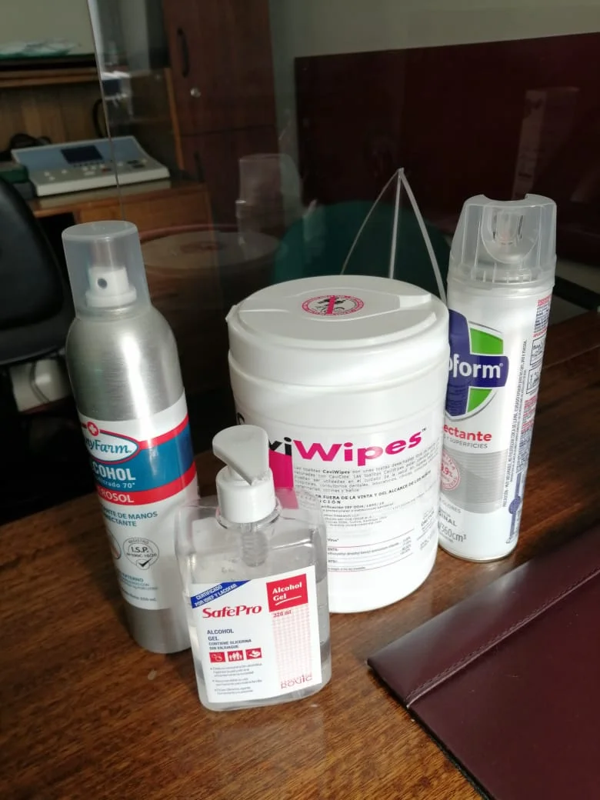

Universidad de Chile
Tecnólogo Médico Otorrinolaringólogo
Universidad de Chile
Tecnólogo Médico Otorrinolaringólogo

Universidad de La Frontera
Tecnólogo Médico en Laboratorio Clínico, Banco de Sangre y Hematología
Universidad de La Frontera
Magister en Salud Pública Comunitaria y Desarrollo Local y Regional
Debido a las actuales condiciones sanitarias se han tomado las máximas precauciones, elementos de protección personal (EPP) y elementos desinfectantes, como se puede apreciar en la siguiente imagen:
